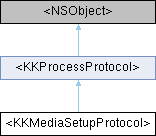

完成基础数据加载后设置一些参数，如裁剪区域 More...
#include <KKWorkflow.h>
Inheritance diagram for <KKMediaSetupProtocol>:

Instance Methods | |
| (void) | - setupPrimaryMediaData: |
 Instance Methods inherited from <KKProcessProtocol> Instance Methods inherited from <KKProcessProtocol> | |
| (NSString *) | - defaultQueueName |
| 线程数量 | |
| (void) | - addKVO |
| (void) | - removeKVO |
Additional Inherited Members | |
| Properties inherited from <KKProcessProtocol> | |
| GCDQueue< Ignore > * | queue |
| 线程队列 | |
| BOOL | runAsync |
| 并行方式 | |
| BOOL | cancelProcess |
Detailed Description
完成基础数据加载后设置一些参数，如裁剪区域
Method Documentation
◆ setupPrimaryMediaData:
| - (void) setupPrimaryMediaData: | (__kindof KKMediaData *) | mediaData |
预设置媒体主要数据
- Parameters
-
mediaData <#mediaData description#>
The documentation for this protocol was generated from the following file:
- Shine/Shine/Sections/WorkflowSection/Model/KKWorkflow.h